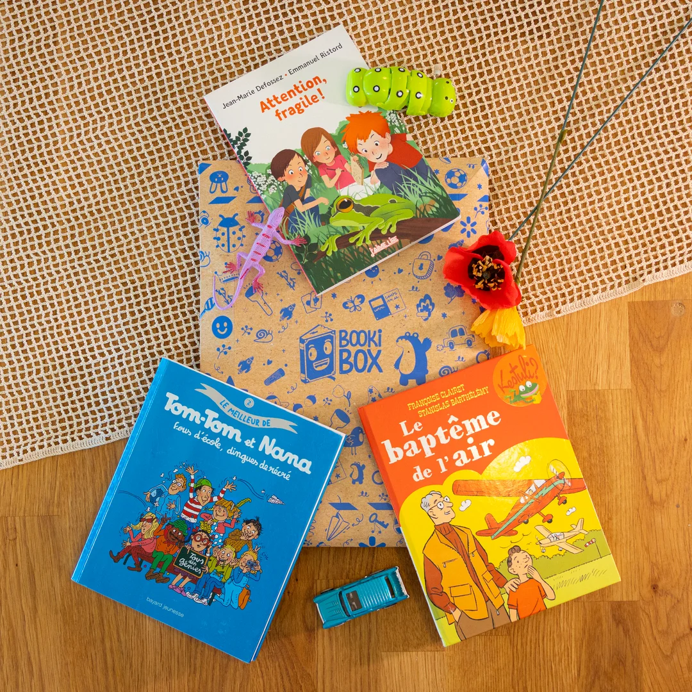
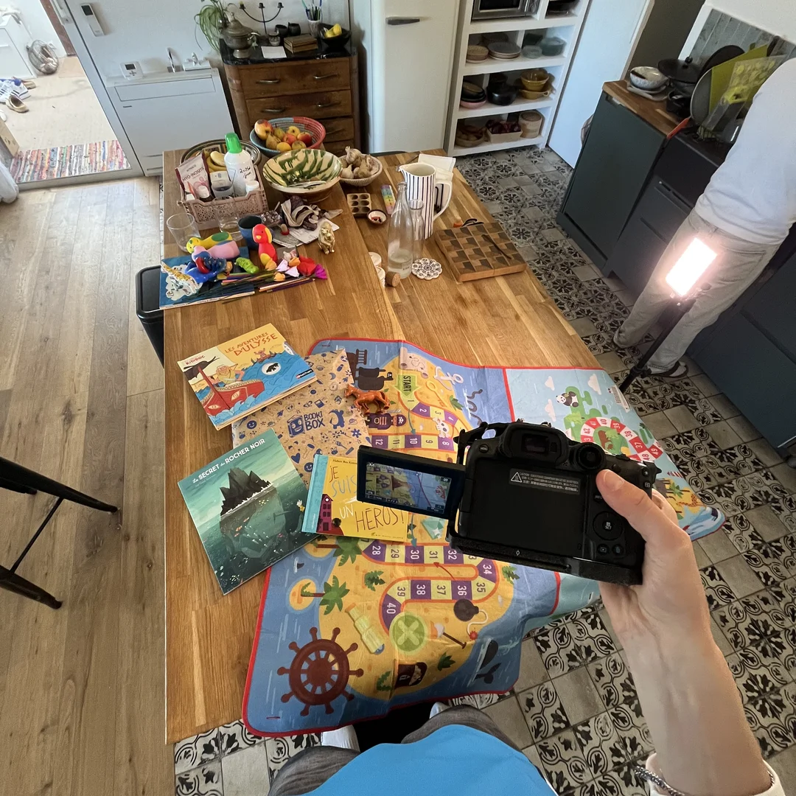
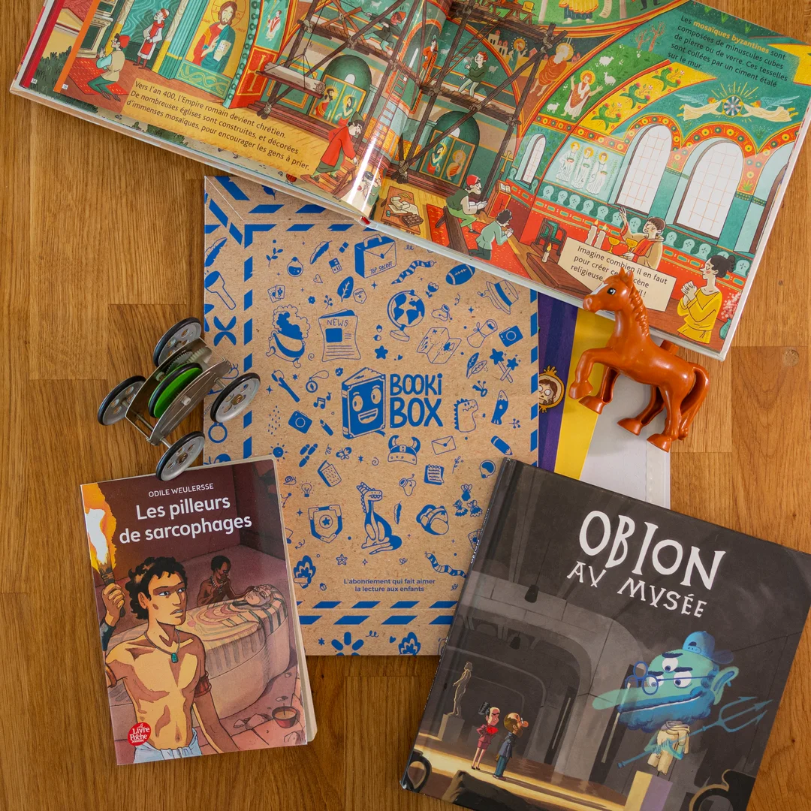
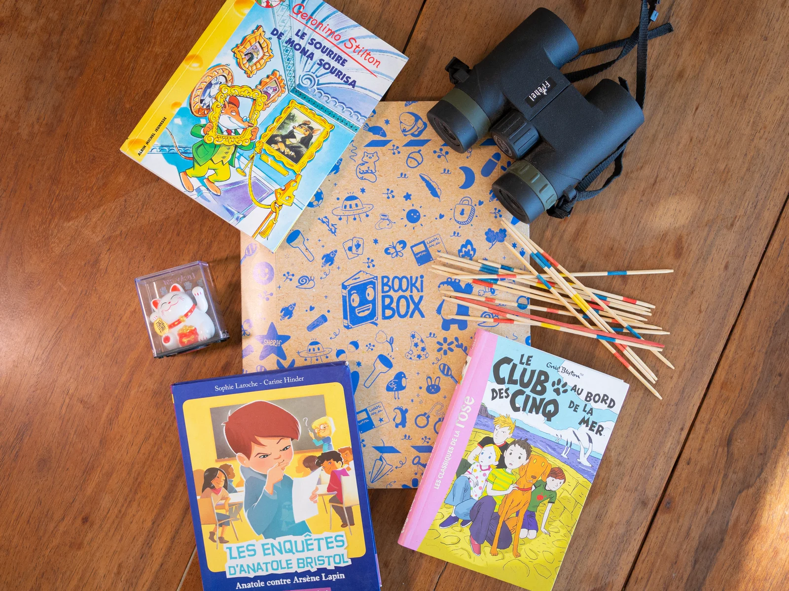

Présentation
Valorisation visuelle
de l'offre BookiBox.
En parallèle de la production vidéo, mon stage chez BookiBox comprenait un second volet stratégique : la valorisation visuelle de l'offre commerciale à travers le shooting produit. L'objectif était de réaliser une série de photographies haute définition destinées à alimenter le site web, les newsletters et les futures campagnes publicitaires de la marque. Il s'agissait de mettre en valeur l'élément central du concept, à savoir la box elle-même, tout en intégrant visuellement les livres d'occasion reconditionnés afin de refléter fidèlement l'identité écoresponsable, qualitative et ludique de l'entreprise.

Mon rôle
Direction artistique
de A à Z.
Pour ce projet, j'ai assuré la direction artistique et technique de A à Z. Mon rôle a débuté par la conception globale de la mise en scène, incluant le choix du décor, l'agencement des compositions et la sélection d'accessoires pertinents pour habiller le cadre autour de la box et des livres. J'ai ensuite géré la prise de vue technique en sculptant la lumière pour donner du relief aux produits, avant de passer à la phase de post-production. J'ai pris en charge l'intégralité du traitement et de la retouche photographique pour garantir un rendu final harmonieux, percutant et aligné sur l'identité graphique de BookiBox.

Matériel & outils
Stack technique.
Afin d'obtenir un résultat à la hauteur des exigences du e-commerce, j'ai configuré un studio éphémère à l'aide de matériel ciblé. Les prises de vues ont été capturées avec le boîtier hybride Canon R7 stabilisé sur trépied, permettant une netteté et une précision optimales sur les détails des livres et du packaging. Pour l'ambiance lumineuse, j'ai à nouveau exploité la polyvalence des petites lights LED Boling, indispensables pour modeler l'éclairage et éliminer les ombres indésirables. Enfin, tout le flux de développement, de correction colorimétrique et de retouche a été centralisé et optimisé sur Adobe Lightroom.

Résultat
